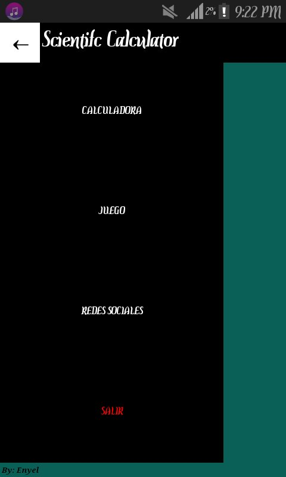

----------> Clave de cifrado: !LxiVduqOttrojZyIfEjvfSFC0lxcpDeRhQbP0MLznzo <----------
Primeramente esta es una aplicacion la cual nos ayudara para la elaboracion de calculos, ya sean basicos o de funciones trigonometricas como lo son el SENO (SEN), COSENO (COS) y TANGENTE (TAN) de un numero llamada: Scientific Calculator.
Para descargar la aplicacion presiona el boton superior derecho de tu pantalla (o sobre la imagen siguiente) con el cual seras dirijido directamente a la pagina de MEGA.
En cuanto cargue la pagina de mega te pedira una clave de cifrado la cual es la la siguiente:
----------> !LxiVduqOttrojZyIfEjvfSFC0lxcpDeRhQbP0MLznzo <----------
copea y pega la clave en el recuadro que (solo recuerda tener cuidado de no copiar accidentalmente un espacio) te lo pide y podras acceder a nuestro archivo APK que deseas.
Una vez que se descargue el archivo APK, abrimos e instalamos el archivo.
Ya instalada la aplicaion en el movil, damos en la opcion de abrir y esperamos a que cargue la aplicacion.
.Como primera instancia podemos apreciar que aparece una pantalla intro con un boton en la parte inferior central, con el cual al ser presionado nos llevara al menu principal.
En el menu principal podemos aobservar un boton en la parte inferior izquierda, que al ser presionado nos desplegara un menu desplegable en el cual podemos elegir que deseamos hacer en la aplicacion; dentro de las opciones que nos proporciona son:
-CALCULADORA
-JUEGO
-REDES SOCIALES
-SALIR

Si elegimos la opcion de calculadora, nos llavara a una calculadora con funciones trigonometricas (en este caso SENO(sen), COSENO(cos) y TANGENTE(tan).), y funciona como una calculadora cientifica convencinal (NOTA:El boton EXP de la calculadora sirve para elevar numeros a distintas potencias como por ejemplo 3 al cuadrado).
Si elegimos la opcion de juego, nos llavara a un juego muy conocido que es el memorama con el ciual podras pasar el tiempo un rato.
Si elegimos la opcion de redes sociales, nos llavara a cada una de mis redes sociales personales para poder solicitar informacion, asi tambien las puedes encontrar en la barra social a la izquierda de tu pantalla.
Si elegimos la opcion de salir automaticamente la aplicacion se cerrara.